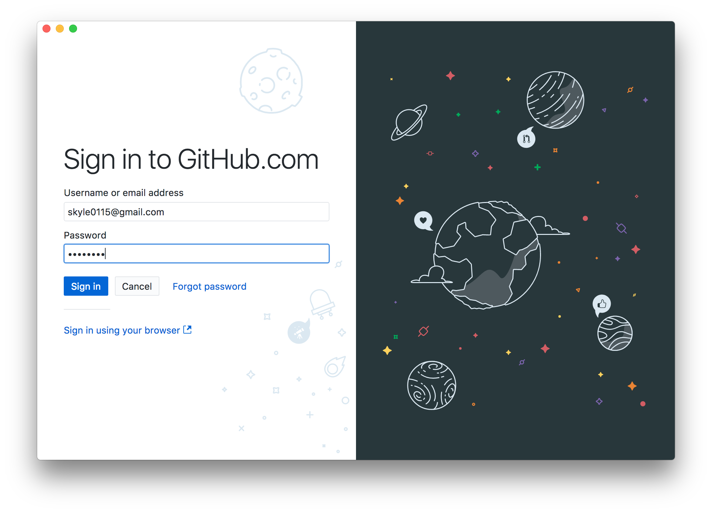

一、發佈
1. 登入 Github
2. 建立新專案
- 點選 Create New Repository
- Name: [username].github.io
- Local Path: 選取要放專案的路徑，程式會幫你新建資料夾
- 點選 Create Repository

3. 確認要上傳的檔案
- 勾選所有要上傳的檔案
- 在 Summary 填寫 first commit
- 點選 Commit
4. 發布網站
- 點選 Publish repository
- 取消 Keep this code private
- 點選 Publish Repository
5. 連結至網頁 https://[username].github.io/